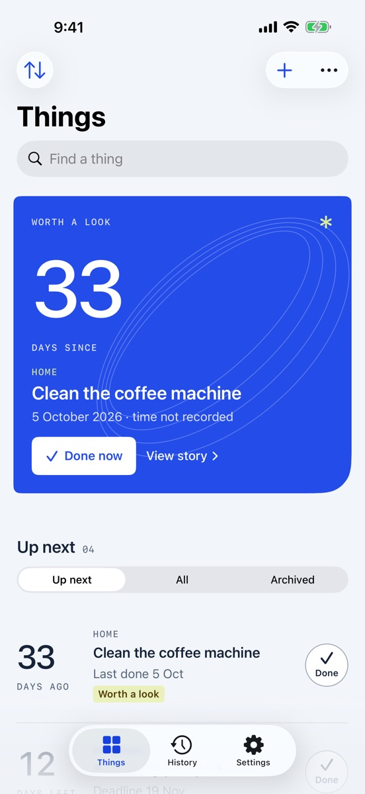

Whenlet
PRODUCTIVITYRemember when.
Get on with now.
Keep track of the last time you did the everyday things. A simple history, gentle intervals, and no streaks to keep alive.
Available on theApp StorePublished by Eduard SimonyanLast-done tracking
